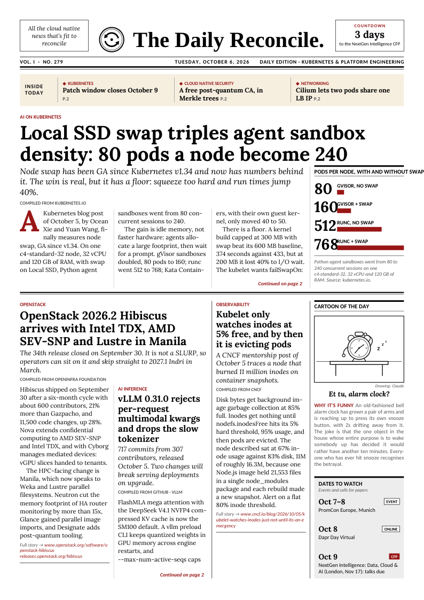

Latest edition · October 6, 2026
Local SSD swap triples agent sandbox density: 80 pods a node become 240
Node swap has been GA since Kubernetes v1.34 and now has numbers behind it. The win is real, but it has a floor: squeeze too hard and run times jump 40%.
Also inside
- OpenStack 2026.2 Hibiscus arrives with Intel TDX, AMD SEV-SNP and Lustre in Manila
- vLLM 0.31.0 rejects per-request multimodal kwargs and drops the slow tokenizer
- Kubelet only watches inodes at 5% free, and by then it is evicting pods
- OpenAI ships text watermarking to the API, off by default, detector withheld